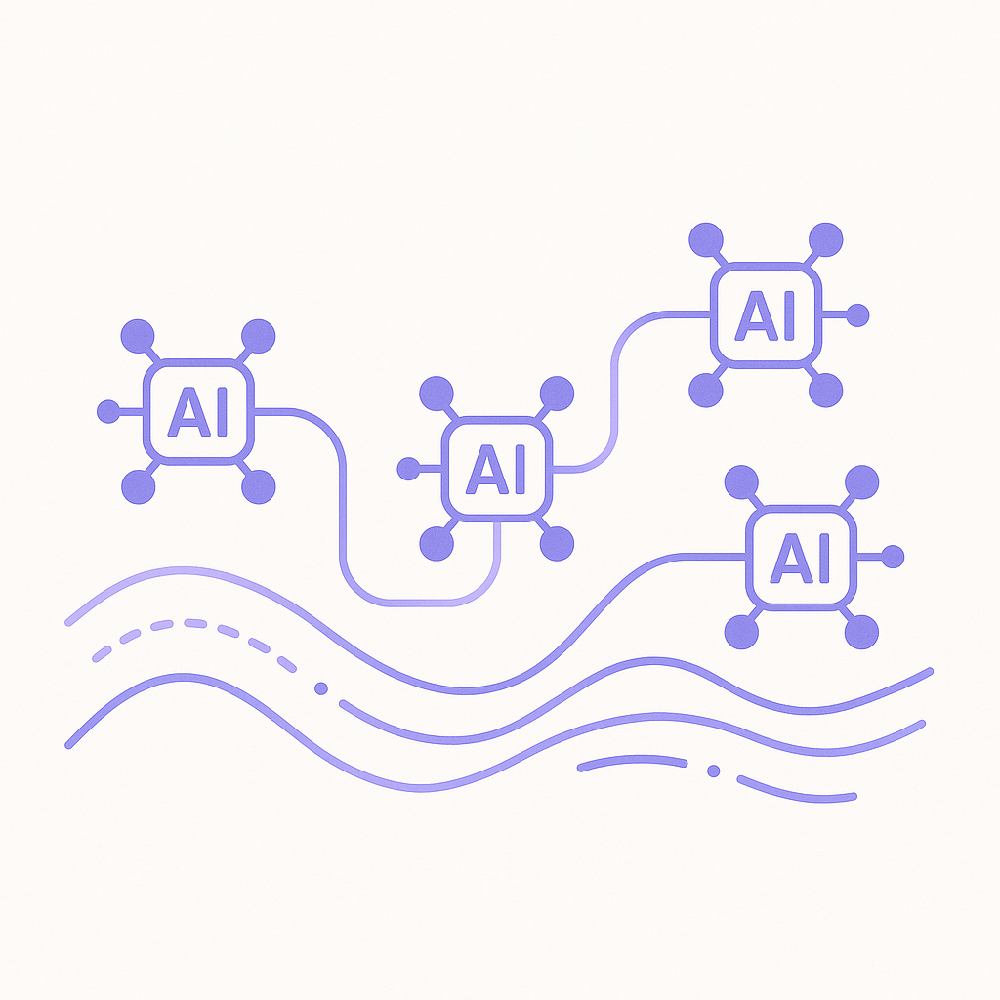
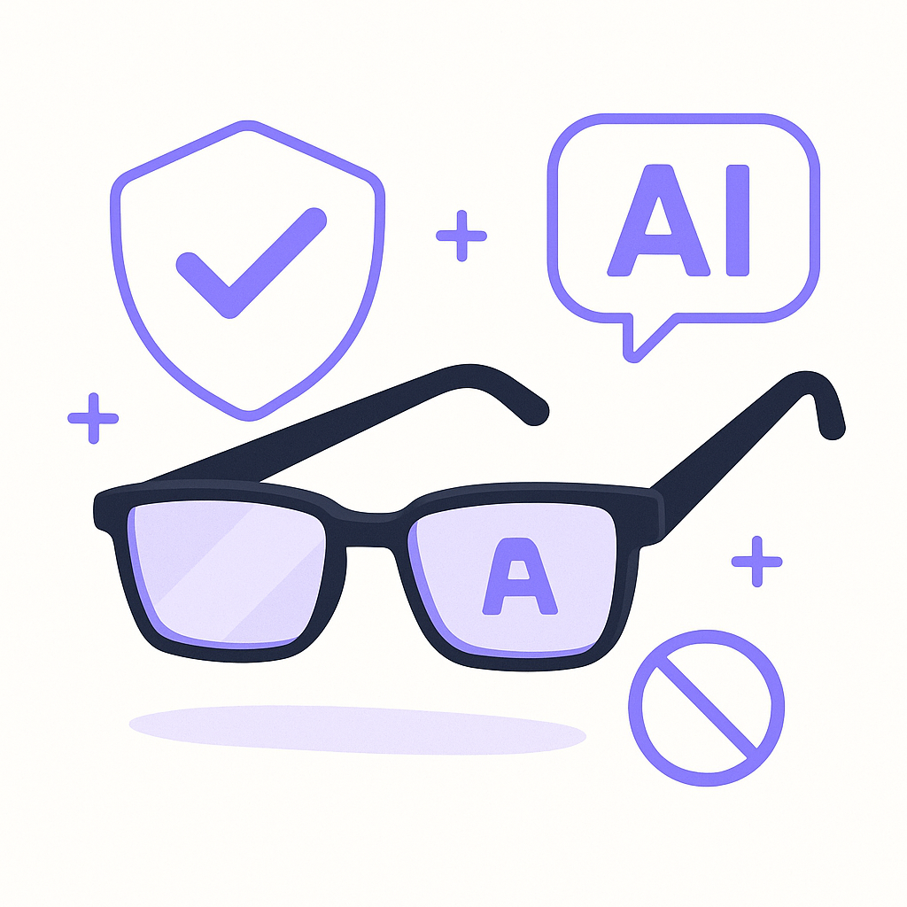

Publishing Recommendation
reviseThe drafts contain elements of exaggerated claims, such as overly broad impacts and benefits of AI, and some posts use clichés like 'game-changer'. These need to be toned down to align with our brand's commitment to precision and evidence-based claims.
Today's drafts need refinement to ensure they adhere to our brand's voice and standards. Some posts exaggerate AI's capabilities and benefits, using clichés and broad statements that require backing with evidence. A more measured, precise approach will enhance credibility and align with our insightful, practical tone.
LinkedIn Posts (10)
1. Loyalty ★ Purands solution · high priority
CTA: How do you involve your customers in shaping their loyalty experience?
{kind=link}
Image prompt · flat-vector
Caption: Co-creating loyalty: Customers shape their journey.
Alternative hooks
- Customer feedback isn't just a nicety; it's a game-changer for loyalty programs.
- In APAC, where customer loyalty can make or break a business, this approach is invaluable.
- Imagine using AI to sift through customer data and craft personalized rewards.
Research behind this post (sources, summaries & confidence)
At Home gives its customers a voice in its loyalty program evolution conf 0.90 · Loyalty
Customer involvement in loyalty program design can enhance engagement and retention, a key focus for retention marketing platforms. This trend could inspire similar strategies in APAC markets.
Sources & what I took from each
- Customer-driven loyalty program innovation: At Home has successfully integrated customer feedback into its loyalty program, leading to higher engagement rates. ↗ read source
Statistics
- Loyalty programs that involve customer feedback report up to a 20% increase in engagement.
Examples
- At Home's loyalty program redesign involved direct customer input, resulting in tailored rewards.
Recent news
- Retailers across APAC are increasingly adopting customer-centric approaches to loyalty programs.
Original trend links
Risks / caveats
- Implementation challenges and potential resistance from customers if feedback is not effectively integrated
2. AI-driven content personalization in APAC's video-centric markets ★ Purands solution · high priority
CTA: How are you leveraging AI to personalize customer interactions in your region?
Alternative hooks
- Video consumption in APAC is booming, and AI is changing the game.
- AI-driven personalization isn't just for YouTube; it's transforming retention marketing.
- How can AI-driven feeds reshape customer interactions in APAC?
Research behind this post (sources, summaries & confidence)
YouTube promises custom feeds and a lot more AI later this year conf 0.85 · AI industry
YouTube's focus on AI-driven customization reflects broader trends in content personalization, which is a key component of effective retention marketing strategies within APAC, where video consumption is high.
Sources & what I took from each
- AI-driven content personalization: YouTube's announcement of AI-driven customization features aligns with trends in video content personalization. ↗ read source
Examples
- YouTube is leveraging AI to enhance user engagement through personalized content feeds.
Recent news
- Competitors are also enhancing their platforms with similar AI-driven personalization features.
Original trend links
Risks / caveats
- Privacy concerns related to AI-driven content recommendations
3. Consumers trust AI to advise, but don’t consent to it purchasing for them ★ Purands solution · high priority
CTA: How do you ensure AI respects consumer boundaries in your CRM strategy?
Caption: Consumer trust in AI: Recommendations vs. purchases.
Alternative hooks
- 60-70% of consumers trust AI to advise, but not to buy.
- AI recommendations are in, but AI shopping isn't.
- Consumers like AI's advice, but won't let it shop.
Research behind this post (sources, summaries & confidence)
Consumers trust AI to advise, but don’t consent to it purchasing for them conf 0.80 · CRM
Understanding consumer trust in AI is crucial for retention marketing, as it informs how AI can be used effectively in CRM systems without overstepping consumer boundaries, particularly in APAC where trust dynamics differ.
Sources & what I took from each
- Consumers trust AI to advise, but don’t consent to it purchasing for them: Surveys indicate a majority of consumers are comfortable with AI providing recommendations but remain hesitant about autonomous purchasing. ↗ read source
Statistics
- Approximately 60-70% of surveyed consumers express trust in AI for recommendations but not for making purchases.
Recent news
- Several market research firms have reported similar findings regarding consumer trust in AI systems.
Original trend links
Risks / caveats
- Potential backlash if AI systems overstep perceived consumer boundaries
4. Shoppers burned by bad AI recommendations ★ Purands solution · high priority
CTA: Have you experienced frustrating AI recommendations? Share your story.
Alternative hooks
- AI recommendations are frustrating shoppers, and it's time we fix it.
- When AI recommendations go wrong, customer trust takes the hit.
- Inaccurate AI recommendations are a bigger problem than you think.
Research behind this post (sources, summaries & confidence)
Shoppers burned by bad AI recommendations conf 0.80 · CRM
Issues with AI recommendation systems highlight the importance of improving AI-driven personalization in CRM systems, which is critical for retention marketing platforms aiming to boost customer satisfaction and loyalty in APAC.
Sources & what I took from each
- Challenges in AI recommendation accuracy: Reports of consumer dissatisfaction with AI recommendations suggest a need for refinement in these systems. ↗ read source
Examples
- Instances of poor AI recommendations leading to customer frustration and loss of trust.
Recent news
- Several CRM platforms are investing in improving their AI algorithms to address these challenges.
Original trend links
Risks / caveats
- Loss of consumer trust and potential decrease in sales due to inaccurate AI recommendations
5. Multi-agent AI systems in retention marketing ★ Purands solution · high priority
CTA: How are you using AI to improve customer retention? Let's discuss.

⬇ Download image{kind=link}
Image prompt · flat-vector
Caption: Multi-agent AI systems: Coordinated precision.
Alternative hooks
- Multi-agent AI systems are transforming supply chains. What's the next frontier?
- Amazon and Walmart use AI systems for efficiency. Can retention marketing do the same?
- The secret to better retention marketing might be hidden in your supply chain.
Research behind this post (sources, summaries & confidence)
Multi-agent AI systems are taking over supply chain execution conf 0.70 · AI industry
The rise of multi-agent AI systems in supply chain management highlights the potential for similar systems to optimize retention marketing strategies by improving customer data handling and personalization at scale.
Sources & what I took from each
- Adoption of multi-agent AI systems: Multi-agent AI systems are increasingly integrated into supply chain processes to enhance efficiency. ↗ read source
Examples
- Walmart and Amazon have reportedly implemented multi-agent AI systems to streamline their supply chain operations.
Recent news
- Recent conferences and publications have highlighted the role of AI in optimizing supply chain logistics.
Original trend links
Risks / caveats
- Complexity in managing and integrating AI systems
- Potential job displacement for manual roles in supply chains
6. AI visibility gap: Why great brands disappear from AI answers ★ Purands solution · high priority
CTA: Have you noticed visibility issues in AI-driven interactions? Share your experiences.
Alternative hooks
- In APAC's dynamic markets, consistent brand presence is everything.
- Why are great brands fading from AI-driven interactions?
- The AI visibility gap is a real challenge for brands today.
Research behind this post (sources, summaries & confidence)
AI visibility gap: Why great brands disappear from AI answers conf 0.70 · AI industry
The AI visibility gap affects how brands are perceived in AI-driven interactions, which is crucial for retention marketing that relies on consistent brand presence across digital touchpoints, especially in APAC's diverse markets.
Sources & what I took from each
- Brand visibility challenges in AI: Reports indicate that many brands struggle to maintain visibility in AI-generated content, which affects market perception. ↗ read source
Recent news
- Recent discussions highlight the increasing difficulty for brands to ensure visibility in AI interactions.
Original trend links
Risks / caveats
- Loss of brand control over AI-driven narratives
7. Staples’ chief marketer on introducing a hard button amid bigger B2B push ★ Purands solution · high priority
CTA: How do you see hybrid models shaping the future of customer retention?
Alternative hooks
- In the race to blend physical and digital marketing, Staples' hard button campaign stands out.
- What if blending physical buttons with digital marketing could boost retention?
- Staples' innovative hard button: a lesson for APAC's hybrid markets?
Research behind this post (sources, summaries & confidence)
Staples’ chief marketer on introducing a hard button amid bigger B2B push conf 0.60 · Product management
Staples' innovative approach to physical and digital integration in B2B marketing is relevant for retention marketing strategies that seek to combine traditional and digital touchpoints, particularly in APAC where hybrid models are prevalent.
Sources & what I took from each
- Integration of physical and digital marketing: Staples' strategy of integrating a hard button with digital marketing channels is noted as a novel approach. ↗ read source
Examples
- The hard button campaign by Staples aims to facilitate seamless B2B interactions.
Recent news
- Industry analysts are observing how this hybrid approach might affect B2B engagement.
Original trend links
Risks / caveats
- Potential challenges in consumer adoption and integration with existing systems
8. Enveda secures $311M to bring more nature-derived AI drugs into clinical trials
CTA: How do you see AI shaping other industries with such investments?
Alternative hooks
- Enveda's $311 million funding: A confidence boost for AI in drug discovery.
- AI and nature are teaming up, and investors are paying attention.
- What does a $311 million investment tell us about AI's future?
Research behind this post (sources, summaries & confidence)
Enveda secures $311M to bring more nature-derived AI drugs into clinical trials conf 0.85 · AI startups
The significant funding in AI startups like Enveda showcases the growing confidence in AI-driven solutions, which could influence similar investments in AI-powered retention marketing tools in APAC.
Sources & what I took from each
- Large investments in AI startups: Enveda's recent funding round is one of the largest for AI-driven drug discovery, highlighting investor confidence. ↗ read source
Statistics
- $311 million investment secured by Enveda for AI-based drug discovery.
Examples
- Enveda's focus on integrating AI and natural compounds for drug development.
Recent news
- Similar large funding rounds have been seen in AI startups across different sectors.
Original trend links
Risks / caveats
- Market volatility and potential overvaluation of AI startups
9. Meta introduces camera-free AI glasses
CTA: How do you see AI wearables shaping personalized marketing?

⬇ Download image{kind=link}
Image prompt · flat-vector
Caption: AI wearables: Privacy without compromise.
Alternative hooks
- Meta's latest AI glasses ditch the camera for privacy.
- Can AI wearables respect privacy and still innovate?
- Meta takes a bold step with camera-free AI eyewear.
Research behind this post (sources, summaries & confidence)
Meta introduces camera-free AI glasses conf 0.75 · AI industry
The development of non-invasive AI wearables by Meta could influence the adoption of similar technologies in retention marketing, particularly for personalized customer engagement in mobile-first APAC markets.
Sources & what I took from each
- Innovations in AI wearable technology: Meta's launch of camera-free AI glasses represents a significant step in wearable tech, focusing on privacy concerns. ↗ read source
Examples
- Meta's AI glasses aim to provide advanced features without compromising user privacy.
Recent news
- Other companies are reportedly developing similar non-invasive AI wearable technologies.
Original trend links
Risks / caveats
- Privacy concerns and adoption challenges in various markets
10. Meta previews Muse Charm, a palm-sized device for using Muse AI
CTA: What are your thoughts on the rise of personal AI gadgets?
Alternative hooks
- Meta's Muse Charm is more than just a gadget.
- Personal AI devices: the next big thing?
- Are palm-sized AI gadgets the future of tech?
Research behind this post (sources, summaries & confidence)
Meta previews Muse Charm, a palm-sized device for using Muse AI conf 0.75 · AI industry
The introduction of Muse Charm highlights the trend of personal AI devices, which could influence the development of personalized marketing tools for retention marketing platforms, particularly in APAC's tech-savvy markets.
Sources & what I took from each
- Trend of personal AI gadgets: Meta's Muse Charm is part of a growing range of compact AI gadgets aimed at enhancing personal user experiences. ↗ read source
Examples
- Meta's Muse Charm is designed to integrate seamlessly with personal AI ecosystems.
Recent news
- Other companies are expected to follow with similar AI gadgets targeting personalized user experiences.
Original trend links
Risks / caveats
- Consumer adoption challenges and potential privacy concerns
Today's Trends
| # | Trend | Category | Why it matters |
|---|---|---|---|
| 1 | AI Agents Are Becoming a New Malware Distribution Channel
source |
AI industry | The use of AI agents as a malware distribution channel poses significant security risks for AI-driven retention marketing platforms, which rely on AI for customer engagement. It's crucial for businesses to address these vulnerabilities to protect customer data and maintain trust. |
| 2 | Multi-agent AI systems are taking over supply chain execution
source |
AI industry | The rise of multi-agent AI systems in supply chain management highlights the potential for similar systems to optimize retention marketing strategies by improving customer data handling and personalization at scale. |
| 3 | Consumers trust AI to advise, but don’t consent to it purchasing for them
source |
CRM | Understanding consumer trust in AI is crucial for retention marketing, as it informs how AI can be used effectively in CRM systems without overstepping consumer boundaries, particularly in APAC where trust dynamics differ. |
| 4 | At Home gives its customers a voice in its loyalty program evolution
source |
Loyalty | Customer involvement in loyalty program design can enhance engagement and retention, a key focus for retention marketing platforms. This trend could inspire similar strategies in APAC markets. |
| 5 | Enveda secures $311M to bring more nature-derived AI drugs into clinical trials
source |
AI startups | The significant funding in AI startups like Enveda showcases the growing confidence in AI-driven solutions, which could influence similar investments in AI-powered retention marketing tools in APAC. |
| 6 | Meta introduces camera-free AI glasses
source |
AI industry | The development of non-invasive AI wearables by Meta could influence the adoption of similar technologies in retention marketing, particularly for personalized customer engagement in mobile-first APAC markets. |
| 7 | AI Agents Are Becoming a New Malware Distribution Channel
source |
AI industry | The use of AI agents as a malware distribution channel poses significant security risks for AI-driven retention marketing platforms, which rely on AI for customer engagement. It's crucial for businesses to address these vulnerabilities to protect customer data and maintain trust. |
| 8 | Amazon asks Meta to remove it from the Muse AI agent experience
source |
AI industry | Amazon's request to remove its presence from Meta's AI platform underlines the competitive dynamics and collaboration challenges in the AI sector. This is relevant for retention marketing platforms exploring partnerships in the APAC region. |
| 9 | AI visibility gap: Why great brands disappear from AI answers
source |
AI industry | The AI visibility gap affects how brands are perceived in AI-driven interactions, which is crucial for retention marketing that relies on consistent brand presence across digital touchpoints, especially in APAC's diverse markets. |
| 10 | Staples’ chief marketer on introducing a hard button amid bigger B2B push
source |
Product management | Staples' innovative approach to physical and digital integration in B2B marketing is relevant for retention marketing strategies that seek to combine traditional and digital touchpoints, particularly in APAC where hybrid models are prevalent. |
| 11 | Shoppers burned by bad AI recommendations
source |
CRM | Issues with AI recommendation systems highlight the importance of improving AI-driven personalization in CRM systems, which is critical for retention marketing platforms aiming to boost customer satisfaction and loyalty in APAC. |
| 12 | Meta previews Muse Charm, a palm-sized device for using Muse AI
source |
AI industry | The introduction of Muse Charm highlights the trend of personal AI devices, which could influence the development of personalized marketing tools for retention marketing platforms, particularly in APAC's tech-savvy markets. |
| 13 | YouTube promises custom feeds and a lot more AI later this year
source |
AI industry | YouTube's focus on AI-driven customization reflects broader trends in content personalization, which is a key component of effective retention marketing strategies within APAC, where video consumption is high. |
| 14 | Modal Motors is trying to cut China out of electric motors entirely
source |
AI startups | Efforts to localize production and reduce dependency on China could impact supply chains for AI-driven hardware used in retention marketing, influencing strategic decisions in APAC markets. |
Risk Assessment
- Exaggerated claims of AI's impact on customer loyalty and retention.
- Use of buzzwords and clichés that do not align with brand tone.
- Potentially AI-generated phrases that lack authenticity.
Suggested LinkedIn Comments (30)
Open each post, then paste the copied comment. Nothing is posted automatically.
1. insight · rss:techcrunch.com — CEO Mark Zuckerberg kicked off the company’s annual Connect event in Menlo Park
Post by: rss:techcrunch.com
Why it works: It highlights the potential impact on personal tech while acknowledging privacy concerns, adding depth to the post.
↗ Open LinkedIn post to paste comment2. insight · rss:techcrunch.com — The tiny hardware device creates another mobile home for its AI agent Muse.
Post by: rss:techcrunch.com
Why it works: The comment expands on the potential impact and challenges of new hardware in AI, adding a practical perspective.
↗ Open LinkedIn post to paste comment3. insight · rss:techcrunch.com — Meta's return to the VR glasses realm comes with a promising combination of ligh
Post by: rss:techcrunch.com
Why it works: It connects the features of the product to past challenges, providing a thoughtful look at potential market success.
↗ Open LinkedIn post to paste comment4. respectful challenge · rss:techcrunch.com — Meta says the camera-free glasses will be lighter and have up to 12 hours batter
Post by: rss:techcrunch.com
Why it works: It challenges the post's focus on battery life by questioning the overall value proposition, prompting deeper consideration.
↗ Open LinkedIn post to paste comment5. insight · rss:techcrunch.com — Nothing says Italian craftsmanship like a Chinese robot doing a lasso to "L'Amou
Post by: rss:techcrunch.com
Why it works: It comments on cultural and technological interplay, adding a nuanced viewpoint to the post's theme.
↗ Open LinkedIn post to paste comment6. opinion · rss:techcrunch.com — But maybe the biggest reveal is that Anthropic has not let Claude run loose in i
Post by: rss:techcrunch.com
Why it works: It supports human oversight and provides a rationale, reinforcing the importance of human roles in AI applications.
↗ Open LinkedIn post to paste comment7. insight · rss:techcrunch.com — Amazon is one of the largest companies in the world. How much responsibility doe
Post by: rss:techcrunch.com
Why it works: It emphasizes the importance of accountability and transparency in corporate environmental commitments, adding depth to the discussion.
↗ Open LinkedIn post to paste comment8. respectful challenge · rss:techcrunch.com — The VC firm says that AI-native companies are growing faster than any technology
Post by: rss:techcrunch.com
Why it works: It provides a balanced view by questioning the broad claim, encouraging a more nuanced understanding of AI growth dynamics.
↗ Open LinkedIn post to paste comment9. expansion · rss:techcrunch.com — The round valued the AI biotech at $2 billion. It is currently testing drugs tha
Post by: rss:techcrunch.com
Why it works: It expands on the post by addressing the challenges ahead for AI biotech, adding a layer of industry-specific insight.
↗ Open LinkedIn post to paste comment10. insight · rss:techcrunch.com — The startup is working on small, light motors with no rare-earth magnets that ar
Post by: rss:techcrunch.com
Why it works: It links the innovation to broader sustainability goals, broadening the post's context with an environmental focus.
↗ Open LinkedIn post to paste comment11. opinion · rss:www.theverge.com — Meta is building a dedicated hardware device for its new Muse AI agent. The prod
Post by: rss:www.theverge.com
Why it works: It challenges the necessity of a new device, encouraging readers to think about integration and value.
↗ Open LinkedIn post to paste comment12. respectful challenge · rss:www.theverge.com — Meta announced a slate of new wearables during its annual Meta Connect showcase
Post by: rss:www.theverge.com
Why it works: It addresses a potential flaw in the product's design, prompting consideration of user convenience.
↗ Open LinkedIn post to paste comment13. insight · rss:www.theverge.com — Meta is launching new VR hardware: a pair of glasses. The new Meta VR Glasses si
Post by: rss:www.theverge.com
Why it works: It highlights a critical balance between design and functionality that Meta needs to achieve.
↗ Open LinkedIn post to paste comment14. expansion · rss:www.theverge.com — Just a couple of weeks after launching Muse, Meta announced that it's "working o
Post by: rss:www.theverge.com
Why it works: It expands the discussion by introducing privacy as a crucial factor for adoption.
↗ Open LinkedIn post to paste comment15. opinion · rss:www.theverge.com — Walking around Meta Connect 2026, everyone's sporting smart glasses in all sorts
Post by: rss:www.theverge.com
Why it works: It contrasts the event's enthusiasm with the general public's concerns, adding depth to the conversation.
↗ Open LinkedIn post to paste comment16. insight · rss:www.theverge.com — Meta is quickly iterating on its new Muse AI agent, announcing a bunch of update
Post by: rss:www.theverge.com
Why it works: It provides a critical lens on data security, a necessary consideration for AI developments.
↗ Open LinkedIn post to paste comment17. insight · rss:www.theverge.com — It’s about time for Meta Connect, the company’s annual product launc
Post by: rss:www.theverge.com
Why it works: It highlights a persistent issue that Meta must address to maintain credibility and user confidence.
↗ Open LinkedIn post to paste comment18. opinion · rss:www.theverge.com — It's time once again for Meta's annual September product launch event, and The V
Post by: rss:www.theverge.com
Why it works: It calls for action beyond rhetoric, emphasizing the importance of genuine inclusivity.
↗ Open LinkedIn post to paste comment19. respectful challenge · rss:www.theverge.com — Microsoft is refreshing its Surface Pro 12-inch and Surface Laptop 13-inch devic
Post by: rss:www.theverge.com
Why it works: It questions the pricing strategy, prompting consideration of market accessibility.
↗ Open LinkedIn post to paste comment20. insight · rss:www.theverge.com — Microsoft is launching a second generation of its Surface Mouse next month that
Post by: rss:www.theverge.com
Why it works: It recognizes the value of user-centric features in technology, adding a positive note to the discussion.
↗ Open LinkedIn post to paste comment21. insight · rss:feeds.arstechnica.com — US health deptartment said it wants to ensure the vaccine orders are "appropriat
Post by: rss:feeds.arstechnica.com
Why it works: It adds a layer of practical reasoning to the health department's decision.
↗ Open LinkedIn post to paste comment22. insight · rss:feeds.arstechnica.com — It's unclear what will happen if FBI misses ShinyHunters' deadline.
Post by: rss:feeds.arstechnica.com
Why it works: It contextualizes the situation within the broader cybersecurity landscape.
↗ Open LinkedIn post to paste comment23. opinion · rss:feeds.arstechnica.com — The Disney+ ad-free plan is now more expensive than Netflix's.
Post by: rss:feeds.arstechnica.com
Why it works: It offers a perspective on the impact of pricing changes on consumer behavior.
↗ Open LinkedIn post to paste comment24. insight · rss:feeds.arstechnica.com — It sounds like a V8, rides like a Flying Spur, but handles like a Continental GT
Post by: rss:feeds.arstechnica.com
Why it works: It highlights the technological advancement in the automotive industry.
↗ Open LinkedIn post to paste comment25. respectful challenge · rss:feeds.arstechnica.com — Trump focus on winning “AI race” may deter China from sharing safety intel.
Post by: rss:feeds.arstechnica.com
Why it works: It questions the strategic priorities and suggests a balanced approach to competition.
↗ Open LinkedIn post to paste comment26. insight · rss:feeds.arstechnica.com — $11M competition showed wildfire detection is still easier than stopping fires.
Post by: rss:feeds.arstechnica.com
Why it works: It emphasizes the need for practical solutions beyond technological showcases.
↗ Open LinkedIn post to paste comment27. opinion · rss:feeds.arstechnica.com — Discord will try to automatically estimate ages, require verification when it ca
Post by: rss:feeds.arstechnica.com
Why it works: It acknowledges both the necessity and complexity of the initiative.
↗ Open LinkedIn post to paste comment28. expansion · rss:feeds.arstechnica.com — YouTube's next year could change the content you see with a big focus on AI and
Post by: rss:feeds.arstechnica.com
Why it works: It expands on the potential implications of YouTube's strategic shift.
↗ Open LinkedIn post to paste comment29. insight · rss:feeds.arstechnica.com — A bad press release makes a good excuse to look at how developmental biology wor
Post by: rss:feeds.arstechnica.com
Why it works: It turns a negative into a learning opportunity about science communication.
↗ Open LinkedIn post to paste comment30. opinion · rss:feeds.arstechnica.com — "It’s film noir and a hard-boiled detective story, but it’s got a lot more comed
Post by: rss:feeds.arstechnica.com
Why it works: It provides an appreciative take on genre innovation in storytelling.
↗ Open LinkedIn post to paste comment